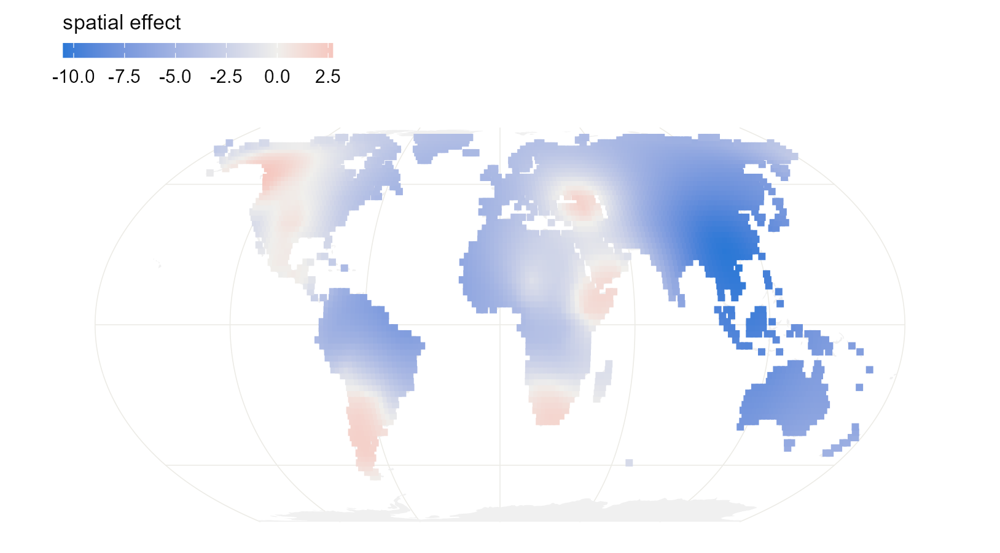
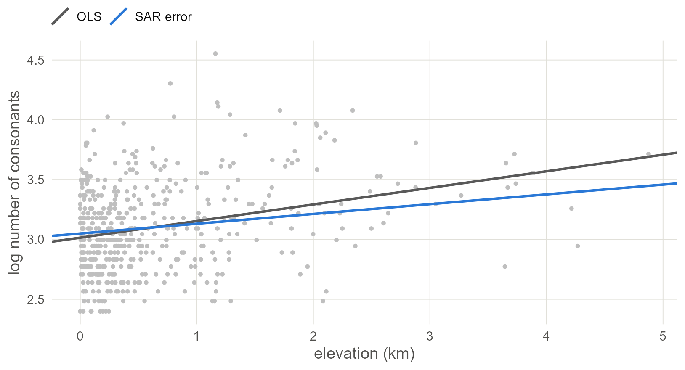
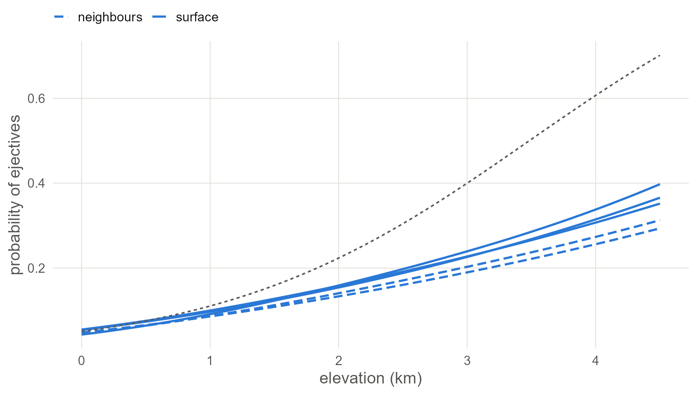

8 Space in INLA, mgcv and by maximum likelihood
Refit the neighbour model in INLA and catch its approximation failing, then put a surface on the globe itself, two ways: an SPDE mesh in INLA and a spline on the sphere in mgcv. Close with the classical spatial regressions.
8.1 Set up
library(INLA)
library(fmesher)
library(mgcv)
library(spdep)
library(spatialreg)
library(sf)
library(rnaturalearth)
library(ggplot2)
base <- "https://rehan-muh.github.io/tutorials/data/"
d <- read.csv(paste0(base, "languages.csv"))
d$elev_km <- d$elevation / 1000
d$sp_id <- seq_len(nrow(d))
m0 <- glm(ejectives ~ elev_km, family = binomial, data = d)
# the neighbour graph and the INLA priors of the earlier chapters
coords <- as.matrix(d[, c("lon", "lat")])
nb <- make.sym.nb(knn2nb(knearneigh(coords, k = 5, longlat = TRUE)))
W <- nb2mat(nb, style = "B")
fixed <- list(mean = 0, prec = 1)
slope_of <- function(fit) {
cols <- c("mean", "sd", "0.025quant", "0.975quant")
round(unlist(fit$summary.fixed["elev_km", cols]), 2)
}8.2 Neighbours in INLA: BYM2
INLA has the BYM2 model of Chapter 7 built in. It takes the 0/1 matrix as its graph, and the two priors match the brms ones: an exponential(1) on the standard deviation, and a prior on the spatial share phi that is as likely to be above one half as below.
pc_bym <- list(prec = list(prior = "pc.prec", param = c(3, 0.05)),
phi = list(prior = "pc", param = c(0.5, 0.5)))
i_bym <- inla(ejectives ~ elev_km +
f(sp_id, model = "bym2", graph = W, scale.model = TRUE,
hyper = pc_bym),
family = "binomial", data = d, control.fixed = fixed)
slope_of(i_bym)## mean sd 0.025quant 0.975quant
## 2.99 1.47 0.58 5.54Look at the slope. In Chapter 7, brms gave about 1.2 for this model, with the same data, the same graph and the same priors. INLA’s answer is more than twice that, with an interval several times wider, so one of the two fits is wrong.
8.2.1 Check the approximation
INLA approximates instead of sampling, and an approximation can fail without an error message. Binary data with one latent value per language, which is our case, is where it is under the most strain.
There is a cheap test. INLA has two computational modes: the current default, which is fast and applies a variational correction (Niekerk et al. 2023), and an older one called classic, which is slower and built differently. When the two agree, the answer is very likely sound. When they disagree, at least one is wrong. Every INLA fit stores the arguments it was called with, so a refit needs no retyping.
classic_of <- function(fit) {
args <- fit$.args
args$inla.mode <- "classic"
do.call(inla, args)
}
i_bym_classic <- classic_of(i_bym)
rbind(default = slope_of(i_bym), classic = slope_of(i_bym_classic))## mean sd 0.025quant 0.975quant
## default 2.99 1.47 0.58 5.54
## classic 1.13 0.32 0.56 1.80In classic mode the slope matches the brms fit. So for this model, with these data, the default approximation failed, and nothing in the output said so. The classic fit is the one used from here on.
Watch out. Make this comparison a habit for any INLA model with a binary outcome, and keep one brms fit of your final model as a reference. If the modes disagree, report the one a sampler confirms, and say that you checked.
8.3 A surface on the sphere: SPDE
Chapter 6 drew its surface on a flat map. INLA’s stochastic partial differential equation (SPDE) approach (Lindgren et al. 2011; Krainski et al. 2019) builds a Gaussian process on a mesh of triangles, and the mesh can cover the globe. There is no projection and no edge.
It takes four steps.
1. Put the languages on the unit sphere, with the three lines of Chapter 5.
to_sphere <- function(lon, lat) {
rad <- pi / 180
cbind(cos(lat * rad) * cos(lon * rad),
cos(lat * rad) * sin(lon * rad),
sin(lat * rad))
}
xyz <- to_sphere(d$lon, d$lat)2. Build the mesh. globe = 12 divides the sphere into triangles with sides of roughly 600 km. The surface is free to vary between mesh nodes, so the triangles should be clearly smaller than the distances over which you expect it to change.
## [1] 14423. Define the surface and its priors. Distances on the unit sphere are in radians; one radian is about 6,370 km. The priors say that the range, the distance at which correlation has nearly died out, is unlikely to be below 0.05 radians (about 300 km), and that the standard deviation is unlikely to exceed 3, as everywhere else.
4. Connect languages to the mesh and fit. A language rarely sits on a mesh node, so its value is interpolated from the three corners of its triangle. fm_basis() computes those weights, and inla.stack() bundles them with the data. This is the one piece of bookkeeping the SPDE approach demands.
loc_weights <- fm_basis(mesh, loc = xyz)
stack <- inla.stack(
data = list(y = d$ejectives),
A = list(loc_weights, 1),
effects = list(field = seq_len(mesh$n),
data.frame(intercept = 1, elev_km = d$elev_km)))
i_spde <- inla(y ~ 0 + intercept + elev_km + f(field, model = spde),
family = "binomial", data = inla.stack.data(stack),
control.predictor = list(A = inla.stack.A(stack)),
control.fixed = fixed)
ci <- c("mean", "0.025quant", "0.975quant")
rbind(default = slope_of(i_spde), classic = slope_of(classic_of(i_spde)))## mean sd 0.025quant 0.975quant
## default 1.09 0.32 0.48 1.73
## classic 1.03 0.31 0.44 1.67## mean 0.025quant 0.975quant
## Range for field 1.15 0.63 1.91
## Stdev for field 4.97 2.87 7.95The two modes agree for this model, so the default fit stands.
The estimated range is about 7,300 km. The range of a Matérn surface is the distance at which correlation has fallen to roughly 0.1, so it is always a larger number than the length-scale brms reported in Chapter 6, by a factor of about two.
Because the surface is defined everywhere on the mesh, it can be evaluated anywhere, not only where there are languages. Evaluate it on a grid of land points and draw the map.
world <- ne_countries(scale = "small", returnclass = "sf")
sf_use_s2(FALSE)
grid <- expand.grid(lon = seq(-179, 179, 2), lat = seq(-55, 75, 2), elev_km = 0)
grid <- st_as_sf(grid, coords = c("lon", "lat"), crs = 4326, remove = FALSE)
grid <- grid[lengths(st_intersects(grid, world)) > 0, ]
grid$field <- as.vector(fm_basis(mesh, loc = to_sphere(grid$lon, grid$lat)) %*%
i_spde$summary.random$field$mean)
ggplot() +
geom_sf(data = world, fill = "grey94", colour = NA) +
geom_sf(data = grid, aes(colour = field), size = 1.5, shape = 15) +
scale_colour_gradient2(low = "#2A78D6", mid = "#F0EFEC", high = "#E34948",
name = "spatial effect") +
coord_sf(crs = "+proj=eqearth")
Figure 8.1: Posterior mean of the SPDE surface on land, on the logit scale. Red regions favour ejectives beyond what elevation predicts; blue regions disfavour them.
What this assumes. The SPDE surface is a Matérn field, a rougher relative of the default surface in brms. Its smoothness is fixed by the method; the range and standard deviation are estimated.
8.4 A surface on the sphere: mgcv
In mgcv a spatial surface is one more penalised smooth. bs = "sos" is a spline on the sphere (Wahba 1981). It takes latitude and longitude in degrees, in that order, and measures distance along the globe.
g_sos <- gam(ejectives ~ elev_km + s(lat, lon, bs = "sos", k = 60),
family = binomial, data = d, method = "REML")
summary(g_sos)$p.table## Estimate Std. Error z value Pr(>|z|)
## (Intercept) -6.22 1.676 -3.71 0.000208
## elev_km 1.10 0.352 3.14 0.001705## edf Ref.df Chi.sq p-value
## s(lat,lon) 23.4 59 69.1 0## k' edf k-index p-value
## s(lat,lon) 59 23.4 1 0.623k = 60 is the largest number of building blocks the surface may use; the penalty then decides how many it effectively needs, reported as edf. If edf comes out close to k, the surface needed more room, so raise k and refit. k.check() runs a formal version of that test.
grid$surface <- predict(g_sos, newdata = grid, type = "terms",
terms = "s(lat,lon)")[, 1]
ggplot() +
geom_sf(data = world, fill = "grey94", colour = NA) +
geom_sf(data = grid, aes(colour = surface), size = 1.5, shape = 15) +
scale_colour_gradient2(low = "#2A78D6", mid = "#F0EFEC", high = "#E34948",
name = "spatial effect") +
coord_sf(crs = "+proj=eqearth")
Figure 8.2: The spline-on-the-sphere surface on land, on the logit scale. It finds the same regions as the SPDE surface above and the Gaussian process of the earlier chapter.
8.5 Maximum likelihood: simultaneous autoregressive models
The classical spatial regressions work on a neighbour graph and a continuous outcome, so return to the question of Chapter 4: do languages at altitude have larger consonant inventories?
d$log_cons <- log(d$n_consonants)
lw <- nb2listw(nb, style = "W")
ols <- lm(log_cons ~ elev_km, data = d)
lm.morantest(ols, lw)##
## Global Moran I for regression residuals
##
## data:
## model: lm(formula = log_cons ~ elev_km, data = d)
## weights: lw
##
## Moran I statistic standard deviate = 17, p-value <2e-16
## alternative hypothesis: greater
## sample estimates:
## Observed Moran I Expectation Variance
## 0.417249 -0.002826 0.000626Inventory size is strongly autocorrelated in space. A simultaneous autoregressive (SAR) model writes that dependence into the regression (Anselin 1988). There are two versions, and they say different things.
The error model says the residuals are spatially correlated: neighbours share unmeasured influences. Here space is a nuisance to be absorbed.
\[y = X\beta + u, \qquad u = \lambda W u + \varepsilon\]
The lag model says the outcome itself depends on the neighbours’ outcomes: a language’s inventory is pulled towards those around it. Here space is a process of diffusion.
\[y = \rho W y + X\beta + \varepsilon\]
sar_err <- errorsarlm(log_cons ~ elev_km, data = d, listw = lw)
sar_lag <- lagsarlm(log_cons ~ elev_km, data = d, listw = lw)
rbind("OLS" = summary(ols)$coefficients["elev_km", 1:2],
"SAR error" = summary(sar_err)$Coef["elev_km", 1:2],
"SAR lag" = summary(sar_lag)$Coef["elev_km", 1:2]) |> round(3)## Estimate Std. Error
## OLS 0.139 0.020
## SAR error 0.082 0.020
## SAR lag 0.078 0.016## lambda rho
## 0.626 0.612Watch out. In the lag model the coefficient of
elev_kmis not the effect of elevation. Raising one language’s elevation changes its inventory, which pulls on its neighbours, which pull back.impacts()adds up those loops (LeSage and Pace 2009). Its direct impact is the number comparable to the other models’ slopes.
## Impact measures (lag, exact):
## Direct Indirect Total
## elev_km dy/dx 0.0866 0.116 0.202If your interest is the slope and space is something to control for, use the error model. Use the lag model only when diffusion between neighbours is itself the hypothesis. brms fits both with sar(lw, type = "error") or type = "lag", for Gaussian and Student-t outcomes.
lines <- data.frame(model = c("OLS", "SAR error"),
intercept = c(coef(ols)[1], sar_err$coefficients[1]),
slope = c(coef(ols)[2], sar_err$coefficients[2]))
ggplot(d, aes(elev_km, log_cons)) +
geom_point(colour = "grey75", size = 0.9) +
geom_abline(data = lines, linewidth = 0.9,
aes(intercept = intercept, slope = slope, colour = model)) +
scale_colour_manual(values = c("grey35", "#2A78D6"), name = NULL) +
labs(x = "elevation (km)", y = "log number of consonants")
Figure 8.3: Consonant inventory size against elevation with the ordinary regression line (grey) and the spatial error model’s (blue). As with the phylogenetic model of the earlier chapter, admitting that neighbours resemble each other makes the line shallower.
8.6 Every engine, one figure
Bring back the two brms fits of Chapters 6 and 7. If you ran those chapters the calls load the saved fits; if not, they fit now.
library(brms)
options(mc.cores = 4, brms.backend = "cmdstanr")
dir.create("fits", showWarnings = FALSE)
pts <- st_as_sf(d, coords = c("lon", "lat"), crs = 4326)
xy <- st_coordinates(st_transform(pts, "+proj=eqearth")) / 1e6
d$x <- xy[, 1]
d$y <- xy[, 2]
dimnames(W) <- list(d$glottocode, d$glottocode)
b_gp <- brm(ejectives ~ elev_km + gp(x, y, k = 20, c = 5/4),
data = d, family = bernoulli(),
prior = prior(normal(0, 1), class = b) +
prior(exponential(1), class = sdgp),
control = list(adapt_delta = 0.95),
seed = 1, file = "fits/m_gp")
b_bym <- brm(ejectives ~ elev_km + car(W, gr = glottocode, type = "bym2"),
data = d, data2 = list(W = W), family = bernoulli(),
prior = prior(normal(0, 1), class = b) +
prior(exponential(1), class = sdcar),
seed = 1, file = "fits/m_bym")
rbind("brms, Gaussian process" = fixef(b_gp)["elev_km", 1:2],
"brms, BYM2" = fixef(b_bym)["elev_km", 1:2],
"INLA, BYM2 (classic)" = slope_of(i_bym_classic)[1:2],
"INLA, SPDE on the globe" = slope_of(i_spde)[1:2],
"mgcv, spline on sphere" = summary(g_sos)$p.table["elev_km", 1:2]) |>
round(2)## Estimate Est.Error
## brms, Gaussian process 1.13 0.27
## brms, BYM2 1.17 0.37
## INLA, BYM2 (classic) 1.13 0.32
## INLA, SPDE on the globe 1.09 0.32
## mgcv, spline on sphere 1.10 0.35The table covers five spatial models from three engines, with two views of space and a flat map against a globe. The figure draws their regression lines, averaged over the sample as in Chapter 3.
x <- seq(0, 4.5, by = 0.1)
averaged <- function(eta, b) {
at_sea <- eta - b * d$elev_km # every language moved to 0 km
sapply(x, function(xi) mean(plogis(at_sea + b * xi)))
}
from_brms <- function(fit) {
averaged(colMeans(posterior_linpred(fit)), fixef(fit)["elev_km", "Estimate"])
}
from_inla <- function(fit) {
averaged(fit$summary.linear.predictor$mean[seq_len(nrow(d))],
fit$summary.fixed["elev_km", "mean"])
}
lines <- rbind(
data.frame(model = "brms GP", view = "surface", p = from_brms(b_gp)),
data.frame(model = "INLA SPDE", view = "surface", p = from_inla(i_spde)),
data.frame(model = "mgcv spline", view = "surface",
p = averaged(predict(g_sos), coef(g_sos)[["elev_km"]])),
data.frame(model = "brms BYM2", view = "neighbours", p = from_brms(b_bym)),
data.frame(model = "INLA BYM2", view = "neighbours",
p = from_inla(i_bym_classic)))
lines$elev_km <- x
naive <- data.frame(elev_km = x)
naive$p <- predict(m0, newdata = naive, type = "response")
ggplot(lines, aes(elev_km, p)) +
geom_line(aes(group = model, linetype = view), colour = "#2A78D6",
linewidth = 0.8) +
geom_line(data = naive, linetype = "22", colour = "grey35") +
scale_linetype_manual(values = c(neighbours = "42", surface = "solid"),
name = NULL) +
labs(x = "elevation (km)", y = "probability of ejectives")
Figure 8.4: The regression line of five spatial models, averaged over the sample. Solid lines treat space as a surface, dashed lines as a neighbour graph. The grey dashed line is the naive regression. All five leave the naive line at altitude and stay close to each other.
8.7 What to carry forward
- A neighbour model is
car()in brms andf(id, model = "bym2", graph = W)in INLA. A surface isgp()in brms, an SPDE mesh in INLA, ands(lat, lon, bs = "sos")in mgcv. The last two live on the globe. - Refit INLA models in
classicmode and compare. Here the comparison caught a failed approximation that nothing in the output flagged. - For a continuous outcome,
errorsarlm()is the quick classical answer; read a lag model throughimpacts(). - The five spatial models give regression lines close to each other, whichever engine and view of space they use, and all five leave the naive line at altitude.
The chapters so far handled ancestry and geography separately. The next chapter puts them in one model.
8.8 Further reading
How earlier studies implemented spatial control. The first implementations used areas, not coordinates: the continental areas of Dryer (1989), turned into a random intercept by Jaeger et al. (2011). That treats two languages on opposite sides of a continent as equally close as two in adjacent valleys. Continuous space entered through smooths and kernels. Wieling et al. (2011) use a geographic smooth in a GAM, the mgcv model of this chapter on a flat map. Guzmán Naranjo and Becker (2022) use a Gaussian process over coordinates in brms, the model of Chapter 6. Skirgård et al. (2023) build a spatial precision matrix from a Matérn kernel on great-circle distances and give it to INLA as a fixed structure, which is the phylogenetic generic0 term of Chapter 4 with a spatial matrix in place of the tree. None of these uses a neighbour graph; the CAR family has been rare in linguistics and standard in epidemiology (Besag et al. 1991; Riebler et al. 2016).
- Krainski et al. (2019) cover the SPDE approach in depth and Lindgren et al. (2022) review its development.
inlabru(Bachl et al. 2019) hides the stack bookkeeping of this chapter behind a formula interface. - A stationary surface lets correlation pass straight across seas and mountains. The barrier model of Bakka et al. (2019) stops it at coastlines, and Fuglstad et al. (2019) derive the joint prior used here as
inla.spde2.pcmatern(). - Miller et al. (2020) show that an SPDE field can be fitted as an
mgcvsmooth, and Pedersen et al. (2019) show how to give each family or area its own smooth. - Kissling and Carl (2008) compare SAR specifications by simulation and find the error model the most reliable; Ver Hoef et al. (2018) set SAR and CAR side by side; Bivand et al. (2021) review the R software.
- Hodges and Reich (2010) and Dupont et al. (2022) treat spatial confounding, which every model in this chapter is exposed to.